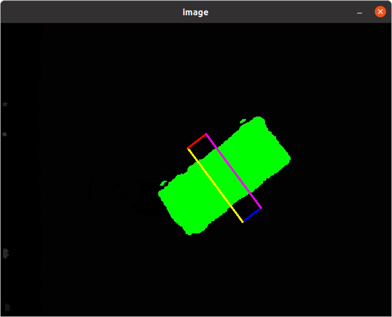

Grasp Validator Example¶
This part of the example follows the previous Grasp Planner Example . After running the grasp planner via
ros2 run grasp_planning grasp_planning_node
the grasps.txt file will be generated in /workcell_ws/src/easy_manipulation_deployment/grasp_validator/results . These are the 4 coordinate points of the grasp representation of the 2 fingered gripper.
Make sure that you have the sample depth image before running the validator. For this example the depth image, depth_img.jpg is provided in /workcell_ws/src/easy_manipulation_deployment/grasp_validator/images. First we need to label the pixel points representing the object.

To run the depth labeller:
ros2 run grasp_validator depth_checker
You should now see a labelled version of the depth image. Press any key to exit. The labelled object, object.jpg will be used for the grasp validator.
To visualize the previously generated grasps, run the grasp validator:
ros2 run grasp_validator validator
You should then see a visualization of the grasp as seen below
Once the grasp plan is verified, we will execute the grasp plan in a simulation with the manipulator: Grasp Execution Example